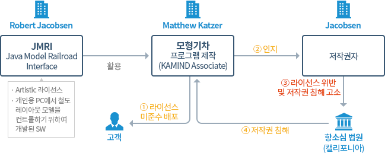
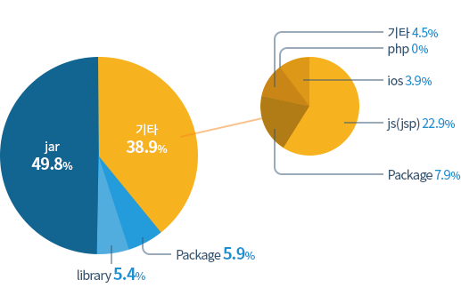

공개SW는 소스코드가 공개되어 있어 누구나 활용이 가능하여 사용이 증가하는 반면 공개SW 라이선스에 대한 인식은 아직 부족하여 오픈소스SW 사용으로 법적 분쟁 발생,
기업 이미지 하락 등의 문제 발생 가능성이 존재합니다.
오프소스 사용과 배포 등에 관련된 다양한 의무사항을 요구 → 프로젝트 수행시 오프소스 라이선스 검증을 통한 문제의 사전 예방은 필수 사항입니다
[ 오프소스SW 라이선스 검증 효과 ]
| 사업위험 감소 측면 |
개발 생산성 증가(비용절감) 측면 |
| 사전 라이선스 검증을 통하여 저작권 위반으로 인한 법적 책임 예방 |
라이선스 검증을 통하여 재사용 가능한 공개 SW의 재사용으로 개발 생산성 증가 |
| 저작권 위반으로 인한 기업이미지 손실 예방 |
내부 지적재산 관리 및 보호가 가능하여 수익 창출에 기여 |
| 시정조치(또는 고소)로 인한 출시지연 예방 |
공개된 표준 준수(de facto standard)에 따른 재개발 비용 절감 |
| 사업철수, 리콜, 판매금지가처분, 손해배상 등으로 인한 금전적 손실 예방 |
개발시점부터 체계적인 검증을 통한 라이선스 위반에 따른 재개발 비용 절감 |
| 개방형 시스템 구축이 가능하여 특정 SW에 대한 종속성 탈피 |
소스 코드가 공개되어 프로그램에 내재된 원천 기술 습득이 가능하여 개발 생산성 증가 |
OSS 계획 작성
사전 Check 사항
- 프로젝트 착수 전 단계에서 오픈소스 사용에 대한 검토 기록이 있는가 확인
- 프로젝트 수행 결과에 대한 배포 여부를 기준으로 2.오픈소스 점검 대상여부를 판단
- 오픈소스에 대한 지식을 보유하고 있는지를 판단하여 교육의 필요성을 검토
- 프로젝트 업무 중 외부 공급 SW(위탁 또는 구매)가 있는지를 확인
오픈소스 관리 계획 작성
- 제공된 엑셀 템플릿에 오픈소스 관리 계획(검증방법, 담당자, 검증 일정)을 수립
- 사용이 예상되는 오픈소스 사용 목록을 작성
- 작성된 오픈소스 관리 계획을 품질경영그룹 담당자에게 제출
※ 반환의무가 있는 라이선스 활용이 필요한 경우 반드시 검토주관부서와 협의 후 사용 한다.
GPL, LGPL 등을 활용 할 경우 어떻게 구성하여 배포 할지에 대한 사용 계획을 반드시 수립(SW 구성 설계)
오픈소스 라이선스 검증 대상 프로젝트 → SW가 있는 모든 프로젝트
점검 대상 선정 사업분야 : 포스코ICT 외부로 배포되는 모든 SW
- VRB대상 프로젝트, SRB 대상 솔루션 및 연구과제심의 대상 프로젝트 중 SW부분이 포함된 경우.
- 투자심의위원회를 실시하거나 이사회 결의에 의해 수행하는 사업 중 SW부분이 포함된 경우
- 포스코, 패밀리, 글로벌 대상 프로젝트 중 SW가 포함되고, 고객에 의해 재배포 되는 경우
프로젝트 유형에 따른 오픈소스 Risk
| 구분 |
위험 패턴 |
위험시나리오 |
예상독소위험 |
| 솔루션 |
|
- GPL 소스 코드의 공개 없이 불특정 고객에게 실행 코드(파일)만 납품
- GPL 오픈소스를 확인한 고객이 소스 코드의 공개를 요구
|
- 소스 코드가 공개되면 핵심 기술, 특허, 영업비밀 등이 노출
- 경쟁 업체로 핵심기술, 특허, 영업비밀 등이 이전
- 솔루션 사업 축소
|
| 임베디드 |
|
- 고객에게GPL 소스코드의 공개없이 공급
- 고객은 소스코드 공개없이 제품을 불특정고객에게 판매
- GPL 저작권자가 소스코드 공개요구 또는 판매중지 요구
|
- 고객이 저작권 위반에 따른 법적 비용과 영업손실을 부담
- 코드공개 혹은 자체비용으로 GPL 코드 제거를 위한 재개발 수행
|
| 클라우드 |
|
- 고객에게 AGPL 소스코드의 공개없이 공급
- 고객은 소스코드 공개없이 제품을 불특정고객에게 서비스
- AGPL 저작권자가 소스코드공개요구 또는 서비스중지 요구
|
- 고객이 저작권 위반에 따른 법적 비용과 영업손실을 부담
- 코드공개 혹은 자체비용으로 AGPL 코드 제거를 위한 재개발 수행
|
| IT서비스 |
|
- 고객에게 소스 코드와 실행 코드 공급
- GPL 소스 코드를 확인한 고객은 개발비 환불을 요구
- 고객은 설치 및 운영에 대한 비용만 지불
|
- 오픈소스에 대한 라이선스 비용을 청구 불가 (서비스 비용은 가능)
- GPL 코드 제거 요구 시 재개발로 인한 프로젝트 지연
- 사업 신뢰도 저하로 차기 사업 수주 확률 감소
|
위반사례 1
SI프로젝트 오픈소스 라이선스 위반 사례(2013년)
결과
- GPL v2의구속력인정, 소스코드 공개
- GPL v2 미준수를 이유로 계약상 위약금5,100 유로 및 원고의 소송비용지급 판시
시사점
위반사례 2
SI프로젝트 오픈소스 라이선스 위반 사례
결과
- LG CNS 심재철 사장 소환장 발부, LG CNS 3차의 소환장 발부에 불응
- LG CNS 심재철 사장 긴급체포 및 8시간 동안 강도깊은 조사
- 스티마소프트웨어와 합의 하여 고객사에 제공한 티차트 라이선스 일괄 구매
시사점
- 공급사로부터 구매한 제품 및 서비스에 포함된 라이선스 위반 사항도 최종 배포자의 책임 있음
- 포스코, 패밀리 프로젝트도 ICT 입장에서는 배포 행위가 발생하는 것으로 동일 위험 존재함
- 코드가 공개되어 있다는 것이 무료 사용을 의미하지 않음 (듀얼 라이선스의 중요성)
- 배포 전 위험을 예방하기 위해 제품 및 서비스에 관련된 전사적 관리체계가 필요함
※ 듀얼 라이선스 : 상업용 라이선스와 오픈소스SW 라이선스를 조합하거나 오픈소스SW 라이선스들을 조합하여 배포
SI프로젝트에서 GPL 라이선스 사용 시 소스 공개 범위 [공개SW 포털 2014.10.10]
GPL 2.0 라이선스 의무사항에 따르면, 배포하거나 공표하려는 저작물의 전부 또는 일부가 양도받은 프로그램으로부터 파생된 것이라면,
저작물 전체에 대한 사용 권리를 본 허가서의 규정에 따라 공중에게 무상으로 허용해야 한다고 명시되어 있습니다.
OSI의 의견이라고 말씀해주신 부분은 확인이 안되고 있으나, Open Source Inititive 재단으로부터 받으신 답변이라는 전제하에 답변을 드린다면, 업체가 해당
공개SW의 원저작권자일 경우에 해당하는 내용입니다.
당연한 말이지만 원저작권자는 해당 SW에 대한 저작권을 보유하고 있으므로 해당 SW를 듀얼 라이선스 등 다양한 방식으로 배포할 권리를 가지고 있기 때문입니다.
그러나 타인의 저작권이 있는 공개SW를 활용하여 배포(판매) 행위를 할 경우에는 고객뿐 아니라 제 3자의 요청이 있을 경우에도 GPL 라이선스 의무사항에 따라 소스코드를
제공해야 합니다.
그러므로 시스템 구축 시 공개SW를 사용하는 경우라면 반드시 고객과 공개SW 사용 여부 및 어떤 라이선스까지 허용할 것인지 충분한 협의가 있어야 할 것입니다.
소스에 포함된 고객의 Know-How가 외부에 노출되는 가능성 제기 → 법적 책임
위반사례 3
오픈소스 라이선스 요구조건 불이행 위반 사례

결과
- Katzer : 대중에 공개되어있는 소스코드를 이용한 것뿐이고 단지 저작권 문구 표시 등의 요구사항만 이행하지 않았으므로 단순한 라이선스 조항 위반
- 고등법원 항소심에서 "Artistic 라이선스는 저작권 라이선스이며, 라이선스 요구사항은 이용허락을 받기 위한 조건이므로 요구사항의 불이행은 결국 저작권 위반에
해당한다"라고 판시
시사점
- 공개SW 라이선스 요구조건 불이행이 단순한 라이선스 계약 위반뿐만 아니라 저작권 침해에도 해당
- 법적인 책임이 존재
라이선스 위반 모니터링
프로젝트에 외부 공급 SW가 있는 경우
외부 위탁 개발, 상용SW 구매 및 SW 라이선스가 있는 프로젝트
- (공통 사항) 계약서에 외주업체 또는 공급사의 오픈소스 관련 책임 사항을 기술해야 한다.
- 수급사업자는 자체 제작하여 납품하는 SW, 공급사로부터 납품 받은 상품에 내재되어 제공되는 SW 등 원사업자에게 제공하는 모든 SW에 대한 오픈소스
사용
내역을
원사업자에게 제공해야 하며, 오픈소스 사용과 관련된 문제가 발생 시에는 수급사업자가 책임을 져야 한다.
- 외부 위탁 개발이 있는 경우
- 수탁사업자가 오픈소스 활용과 관련한 계획 및 실적을 관리하도록 용역내역서에 반영한다.
- 산출물 목록에 “오픈소스 사용 목록” 또는 “오픈소스 검증결과서”를 반영한다.
- 테스트 단계 산출물 목록에 반영 : 가동 단계 반영 시 문제 라이선스 사용이 확인되는 경우 조치를 위한 일정 지연의 발생 가능성이
있음
- 용역내역서의 완료검수 기준에 아래 사항을 반드시 기술해야 한다.
- 오픈소스(오픈소스SW, OSS) 검증 결과서 또는 오픈소스 사용 목록의 제출 여부 추가
- 상용SW를 납품/라이선스 하는 경우
- 공급사가 납품/라이선스 하는 SW에 (공통사항)과 같은 책임을 있다는 것을 구매내역서에 포함한다.
- 제품 내에 핵심SW가 내장된 경우(임베디드 SW)에도 오픈소스 관련 책임사항을 준수하도록 해야 한다.
프로젝트에 외부 공급 SW가 있는 경우
사례 : 외주 협력사가 작성한 오픈소스 사용 목록 및 대책
| 사용SW |
License |
사용형태 |
기 능 |
대 책 |
| Agg, 2.5 |
GNU GPL, Version 2.0 |
Source Code, Library |
화면 Graphic 처리 |
AGG 2.4 License로 변경
AGG 2.4 License는 Anti_Grain Geometry Public License로 Modified
BSD License임.
Document 및 Program에 Copyright를 추가할 예정임.
|
| Freetype, 2.3.11 |
FreeType License (FTL) |
Source Code, Library |
화면 Font 랜더링 |
BSD 기반의 License로 사용에 자유로우며 Document 및 Program에 Copyright를 추가할 예정임. |
| Jpeglib, 9a |
Independent JPEG Group License |
Library |
Image File 압축 |
Source Code, Library 사용에 자유로우며 Document 및 Program에 Copyright를 추가할 예정임. |
| apr, 1.2.12 |
Apache License, Version 2.0 |
Library |
SIP Stack Memory 관리 |
Apache License는 사용에 문제 없으며, 상업적, 비상업적 사용에 제약이 없음.
Document 및 Program에 Copyright를 추가할
예정임.
|
| FFmpeg |
LGPL |
Source Code, Library |
CCTV viewer용 H.264 Decoder, 영상 통화용 MPEG4 En/Decoding |
CCTV 연동용.
Document 및 Program에 Copyright를 추가할 예정임. |
| 사용SW |
License |
사용형태 |
기 능 |
대 책 |
sentry
v2.0.2 |
BSD-3-Clause |
Source Code, Library |
회원 관리 |
Library 사용에 자유로움 |
guzzle
v3.7.4 |
MIT |
Source Code, Library |
http 통신 |
Library 사용에 자유로움 |
phpexcel
1.7.9 |
LGPL |
Source Code, Library |
Excel 파일 처리 |
Library 사용에 자유로움 |
Symphony
2.3.x |
MIT |
Source Code, Library |
Framework |
Library 사용에 자유로움 |
laravel
v4.0.9 |
MIT |
Source Code, Library |
Framework |
Library 사용에 자유로움 |
OSS 관련 Site
- 오픈소스 소스코드(원저작권자) 및 라이선스 유형 확인 방법
- 오픈소스 소스를 제공하는 Site에서 확인
- Google의 오픈소스 코드 검색사이트 : https://code.google.com/
- 리눅스 커널, 툴 리눅스 프로그램 제공 사이트 : http://freshmeat.net
- 오픈소스 프로젝트 포털 : www.sourceforge.net/
- 오픈소스 코드 저장소 : https://github.com/
- 소스 코드를 통한 확인
- 소스코드를 다운받아 COPYING, README, LICENSE 등의 파일에서 확인하거나 소스코드의 상위 코멘트에서 확인이 가능
- 오픈소스 라이선스 원문 및 관련 Homepage 확인
- 오픈소스 SW 라이선스 종합정보 시스템(OLIS : Opensource License Information System)
- 접속URL : https://www.olis.or.kr/ossw/license/license/list.do
- 라이선스에 대한 소개 정보(관리기관, 웹사이트 등) 및 원문(한글, 영문, 영한)을 제공
- (SPDX : Software Package Data Exchange)
- 접속URL : http://spdx.org/licenses
OSS 검증 및 조치 기준
오픈소스 라이선스 검증 시점 기준
- 회사 내에서 제작되는 SW : 제작 완료 시, 배포 전 전수 점검
- 회사 밖에서 납품되는 SW : 최종 검수 시
오픈소스 라이선스 검증 준수 사항
- 오픈소스 라이선스 미검증 시 원칙적으로 출시 및 납품 불가
- 오픈소스 라이선스 미준수에 대한 조치 완료 확인은 반드시 라이선스 검증 주관부서의 최종 확인이 필수
오픈소스 라이선스 검증 ID 사용
- 오픈소스 라이선스 검증을 위한 ID 요청은 최소 1달 전 검증 주관부서로 요청(사용계정이 한정되어 있음)
- ID 사용 완료 시 즉시 검증 주관부서로 사용 완료 통보 (검증 및 조치 결과서를 함께 제출)
회사 지침에 반영 (프로젝트관리, 외주 프로젝트관리 및 SW개발 지침)
| 6.1.2 1) |
~ 준수방안, 오픈소스 활용계획 등 사업수행을 ~ |
| 6.2.2 |
1) 구매품목 ~
2) 또한 프로젝트 ~
3) 구매품목 및 용역에 SW가 포함된 경우 오픈소스 라이선스 의무사항을 준수해야 한다. |
| 6.2.10 |
6.2.10 오픈소스 라이선스 관리
1) 프로젝트관리자는 오픈소스 활용에 따른 라이선스 미준수 리스크를 방지하기 위하여 검증 활동을 수행해야 한다.
2) 프로젝트관리자는 검증결과 라이선스 위반 사항 발견 시 조치계획을 수립하여 문제가 없도록 조치해야 한다.
3) 프로젝트관리자는 조치 계획 및 결과를 오픈소스 라이선스 검증주관부서로 제출해야 한다.
4) 프로젝트관리자는 제품을 고객에게 인도하기 전에 반드시 오픈소스 라이선스 의무사항에 따른 조치를 수행한 후 제공해야 한다.
|
| 6.3.1 |
7) 프로젝트관리자는 오픈소스 사용 목록을 오픈소스 라이선스 검증주관부서로 제출해야 한다. |
프로젝트 자체 검증 절차
- 점검계정 부여 : 전사 라이선스 관리담당자는 점검을 위한 ID 및 패스워드를 프로젝트 현장에 부여 (최소 1달 전 사용 협의 필요)
- 소스코드 수집 : 프로젝트(PM)는 개발자 개별적 저장소 또는 형상관리 서버와 같은 통합 저장소 모두 사용 가능
- 소스코드 분석 : 프로젝트(PM)는 회사가 제공하는 라이선스 자동 검증 툴(블랙덕 Protex)을 이용하여 라이선스를 분석(Analysis)함
- 결과서 출력 : 검증의 편의성과 효율성을 제공하는 HTML 형식과 EXEL 형식의 자동 검증 결과서를 생성함
- 수동 점검 : 자동 검증 결과를 참고하여 개발자가 라이선스 변경이 필요한 부분을 확인하여 재검증함
- 검증 의뢰 : 라이선스 지정이 개발자 또는 담당자 수준에서 애매하거나 불확실할 경우 라이선스 검토주관 부서로 검증을 의뢰함
- 최종 결과서 및 조치계획서 제출 : 라이선스 자동 검증 툴에서 제공하는 공식적인 결과서 및 조치계획서를 검증주관부서로 제출함
- 조치결과서 제출 : 프로젝트에서는 제출된 계획에 따라 라이선스 준수 조치 후 조치결과서를 검증 및 검토 주관부서로 제출
- 조치 결과 확인 : 검토주관부서에서는 조치결과서를 바탕으로 라이선스 준수 조건에 맞게 조치하였는지를 확인하고, 검증주관부서로 관련 내용을 통보하고, 검증주관부서에서는
최종적으로
검증완료 여부를 확인
오픈소스 라이선스 검증 결과에 따른 조치
- 라이선스위반파일점검
- 라이선스 위반으로 점검된 파일이 제품에 반드시 필요한 파일이나 코드인지 확인한다.
전체 파일이나 컴포넌트를 적용하면서 불필요한 오픈소스 코드까지
함께
포함되고, 해당 오픈소스 코드가 라이선스 위반인 경우가 발생
- 불필요한 오픈소스가 포함되어 있는 경우 제품에서 제거하고, 점검리스트에 표시한다.
- 다음 점검 시 제거한 파일이 점검리스트에 제외되어 있는지 확인한다.
- 위반파일저작권자확인
- 라이선스 위반으로 점검된 파일의 저작권자를 확인한다.
- 저작권자를 확인하기 쉬운 파일부터 확인을 진행한다.
- 저작권자는 다운로드 받은 사이트나 소스코드 내에서 확인한다. (4.오픈소스 검증 출처확인 방법 참조)
- 라이선스 의무사항 조치 시 저작권자의 표시가 반드시 필요하기 때문에 오픈소스 사용시 저작권자가 확인되는 오픈소스만 사용한다.
- 법적 검토 의뢰 및 조치
- 점검리스트가 확정되면 점검리스트와 조치계획서를 첨부하여 라이선스 검토 주관부서에 의뢰한다.
- 긴급한 검토가 필요하거나 검토에 시간소요가 많이 필요할 것으로 예상되는 경우에는 미리 라이선스 검토 주관부서와 협의한다.
- 라이선스 검토 주관부서와 조치방법에 대하여 협의한다.
- 조치계획서 기간 내에 협의한 조치방법에 따라서 라이선스 위반 파일을 조치한다.
오픈소스 라이선스 검증 사례
“주문처리”의 i_index.jsp/
“Linkcast”의 Common.js Jul 5, 2009
개발자가 기존 사용하던 소스를 Copy하여 사용함 → 확인 후 사용 필요
“주문처리”의 PosExtStandardApplet.java
“openconcerto”의 FixedColumnExample.java
GPL라이선스의 오픈소스와 자제 제작 소스의 일부분이 일치 → 소스 공개의무 발생
조치 유형
저작권 고지사항 유지 & 수정 시 수정 내용 고지 사항 준수
우측 오픈소스를 활용하여 좌측의 프로그램을 작성하였으나 저작권 고지 및 수정내용 고지를 준수하지 않음→ 준수 처리 필요
조치 유형
아파치 2.0의 주요 준수사항
- 저작권, 개발자 및 기여자 정보의 표시
- 대부분의 오픈소스SW 라이선스는 개발자 또는 기여자에 관한 사항과 저작권에 관한 사항을 제품에 표시하거나 포함하도록 요구하고 있다.
마치 저작인격권의 하나인 성명표시권과 유사하다.
3. You must retain, in the Source form of any Derivative Works
that You distribute, all copyright, patent, trademark, and attribution notices from
the Source form of the Work.
- 코드를 수정한 경우 수정한 정보의 표시
- 이용자가 소스코드를 수정하였을 때에는 수정한 사람, 수정일자 등 수정에 관한 내용들을 포함시키도록 함으로써, 원본과 구별할 수 있도록 한다.
저작인격권의 하나인 동일성유지권에 비유할 수 있다.
2. You must cause any modified files to carry prominent notices stating that You
changed the files
- 라이선스 정보의 제공
- 많은 오픈소스SW 라이선스들은 이용자들이 오픈소스SW에 관한 권리를 잘 이해할 수 있도록 배포자로 하여금 해당 라이선스의 사본을 함께 첨부할 것을
요구하고 있다.
1. You must give any other recipients of the Work or Derivative Works a copy of this
License.
주요 오픈소스 라이선스 비교
| 라이선스의 특징 및 의무사항 |
BSD |
아파치2.0 |
GPL2.0 |
LGPL2.1 |
MPL |
| 복제·배포·수정의 권한 허여 |
O |
O |
O |
O |
O |
| 배포 시 라이선스 사본 첨부 |
|
O |
O |
O |
O |
| 저작권고지사항 또는 Attribution 고지사항 유지 |
O |
O |
O |
O |
O |
| 배포 시 소스코드 제공의무(Reciprocity)와 범위 |
|
|
derivative
work |
derivative
work |
File |
| 수정 시 수정내용 고지 |
|
O |
O |
O |
O |
배포 기준 및 공통 의무사항
솔루션 및 프로젝트 배포 기준
- 오픈소스 검증 완료에 대해서 주관부서 확인 후 배포
- 오픈소스 의무 사항에 대한 조치 확인은 라이선스 검토 주관부서
- 오픈소스 검증에 대한 최종 확인은 라이선스 검증 주관부서
오픈소스 라이선스 공통 의무 사항
- 배포 시 라이선스 사본을 함께 제공하여야 한다(BSD 라이선스 제외).
- 저작권자, 저작권 표시 등 저작권 고지사항, 보증책임 및 책임제한 관련 고지사항을 원본 그대로 유지하여야 한다.
- 적절한 저작권 안내 및 보증책임 없음을 명시하여야 한다(Notice or 파일 내).
- 저작권자의 손해에 대한 책임 없음을 명시하여야 한다.
- 코드 수정 시 수정내용(수정사실,수정날짜)을 파일에 명시하여야 한다.
| 공통 의무 사항 |
GPL |
LGPL |
AGPL |
MPL |
CPL |
EPL |
BSD |
Apache |
| 배포 시 라이선스 사본 제공 |
○ |
○ |
○ |
○ |
○ |
○ |
|
○ |
| 저작권 고지사항 유지 |
○ |
○ |
○ |
○ |
○ |
○ |
○ |
○ |
| 보증의 부인 |
○ |
○ |
○ |
○ |
○ |
○ |
○ |
○ |
| 책임의 제한 |
○ |
○ |
○ |
○ |
○ |
○ |
○ |
○ |
| 수정 시 수정내용 고지 |
○ |
○ |
○ |
○ |
○ |
○ |
|
|
오픈소스 라이선스 적용 절차
- 반환의무가 있는 소스코드 공개
- 반환의무가 있는 오픈소스는 반드시 제3자에게 프로그램과 함께 제공하여야 한다.
- 반환의무가 있는 오픈소스는 제3자에게 프로그램을 제공하는 방식과 동일한 방식으로 제공하여야 한다.
예시)
저장매체를 통해 프로그램을 제공하는 경우 저장매체에 함께 저장
다운로드 방식으로 제공하는 경우 해당 사이트에 다운로드 할 수 있도록 제공 가능
- 반환의무가 있는 오픈소스를 공식 사이트에서 쉽게 구할 수 있는 경우에는 공식 사이트의 주소를 표시하는 방식으로 제공할 수 있다 한다.
- 오픈소스라이선스 고지문 작성
- 해당 라이선스의 오픈소스 사용파일, 저작권자, 연도, 라이선스 명칭이 포함된 고지문을 작성한다.
- 고지문의 형식은 프로그램 제공 사이트, 모바일 앱 정보 등에 공개된 고지문을 참조하여 작성한다.
- 해당 라이선스 사용파일이 복수인 경우 순차적으로 명시한다. 모듈, 라이브러리, 컴포넌트 단위로 묶어서 간단히 명시할 수 있다. 다만, 불필요한 파일이
오픈소스로
고지되지 않도록 한다.
- 라이선스 사본 제공의무가 있는 라이선스의 경우 고지문구 아래에 라이선스 사본을 추가한다.
- 고지문은 오픈소스에 대한 고지내용이므로, 회사 고유 파일이 고지문에 포함되지 않도록 유의한다
- 오픈소스 라이선스 고지문 첨부
- 고지문은 별도 파일(txt 등)로 만들어 프로그램에 추가할 수 있고, 코드 내에 삽입하여 제3자에게 제공할 수 있다.
- 제품이 웹사이트에서 다운로드 받는 방식을 사용하는 경우 고지문도 다운로드방식으로 제공할 수 있다.
오픈소스 라이선스 고지 및 원문배포 준수사항
오픈소스 원문배포 준수사항
- 제품과 함께 소스코드에 대한 정보 및 소스코드를 획득할 수 있는 절차를 제공한다.
- 제품별 라이선스 및 소스코드를 제공 할 수 있는 Site가 운영되면 실제 소스코드는 웹사이트에 공개한다.
오픈소스 라이선스 고지 준수사항
- 오픈소스 관련 솔루션/프로젝트별 라이선스 파일명은 오픈소스_Notice.txt(doc)으로 한다.
- 하나의 파일 안에 라이선스 모두 포함하는 것으로 한다.
- 가능한 한 최상위 디렉토리 한곳에 오픈소스_Notice.txt를 둔다.
- 예) ucube4-OSS-license-notice.txt
- "LGPL" 같은 것은 배포를 기준으로 구분하여
- 배포하지 않는 경우는 별도의 라이선스에 관하여 언급하지 않는다.
- 배포하는 경우에는 해당 파일을 오픈소스_Notice.txt에 명시하며, 패키징에 소스코드를 공개하며 라이선스 원문을 포함한다.
배포 전 최종 확인 사항
- 의무고지 사항 및 법적 리스크가 없는지 재확인 법률 검토가 필요 시 검토주관부서에 검토를 의뢰
오픈소스 라이선스 적용 사례
오픈소스 소스코드 제공 사례
- 웹사이트에 게시하는 방법
- 웹사이트에 소스코드의 정보를 제공하고 요청 시 소스코드를 제공하는 방법
- CD(프로그램과 함께 제공), 전자우편 등을 이용하는 방법
[삼성전자 : https://opensource.samsung.com/index.jsp]
[ LG전자 : http://www.lg.com/global/support/opensource/opensource.jsp ]
오픈소스 고지의무 제공 사례(대외)
- 설치 시 아래와 같이 공개SW에 대한 정보를 제공 : 곰플레이어
- 웹페이지에 라이선스 전문 제공 : 전자정부프레임워크 (www.egovframe.go.kr)
- 웹페이지에 기본정보 제공 → 다운로드 받으면 txt 파일로 상세 라이선스 정보를 제공(www.xpressengine.com)
오픈소스 고지의무 제공 사례(포스코ICT)
오픈소스 라이선스 적용 사례
오픈소스 공급망 관리
배포
- 대부분의 오픈소스 소프트웨어의 경우 배포 시 의무 발생
- 배포하지 않을 경우 자유로운 수정, 사용의 권리가 있음
- AGPL의 경우 배포없이 온라인 등으로 서비스를 할 경우에도 소스코드 공개의무 등 발생
배포자의 관점
- 최종 소비자 입장 : 오픈소스 소프트웨어가 포함된 제품 제작사
- 라이선스 저작권자 입장 : 오픈소스 소프트웨어의 공급 망에 있는 모든 관계사(오픈소스 활용한 개발사, 오픈소스 활용 부품 공급자. 오픈소스 활용 완제품 생산자,
오픈소스 활용 제품 판매사)
2014년 오픈소스 라이선스 검증 결과
23개 검증 대상에서 60개의 라이선스가 사용되고, 고위험 라이선스도 15건이 있음
2014년 활용유형별 검증 결과
활용 컴포넌트 유형별(파일 확장자 참고) 오픈소스 라이선스 현황
| 구분 |
GPL류 |
LGPL류 |
Apache류 |
MIT류 |
기타 |
합계 |
| Package |
1 |
3 |
21 |
8 |
0 |
33 |
| Library |
1 |
4 |
8 |
17 |
0 |
30 |
| jar |
17 |
30 |
199 |
32 |
1 |
279 |
| java |
2 |
4 |
29 |
7 |
0 |
42 |
| js(jsp) |
16 |
8 |
24 |
80 |
0 |
128 |
| php |
0 |
0 |
0 |
1 |
0 |
1 |
| ios관련 |
0 |
0 |
0 |
18 |
4 |
22 |
| 기타 |
4 |
4 |
6 |
11 |
0 |
25 |
- Package : 단독으로 기능을 수행 할 수 있는 기능의 집합체(hadoop 등)
- Library : 시스템 구성에 도움을 주는 다양한 File 유형의 집합(jqgrid, jquery.com 등)
- Jar : 특정 기능을 수행하는 여러 Class File의 묶음(Apache POI 등)

- 활용되는 오픈소스의 60%가 Package, Library 및 JAR 형태로 프로젝트에서 사용됨
- 이미 구현된 기능을 활용하는 것으로 라이선스 요구 조건을 반드시 준수해야 함
- GPL 및 LGPL류의 컴포넌트는 사전에 충분히 검토 후 사용해야 함(주관부서와 협의 후 사용 필요)
- 사용자 Interface와 관련된 JSP, JS에 22.9%가 활용
- 사용자가 직접 작성하는 소스 중 화면 UI와 관련된 부분에도 많은 오픈소스가 있음 타 프로그램을 Copy하여 사용 시 주의 필요
- 사용자가 직접 작성하는 JAVA File에는 상대적으로 오픈소스의 활용이 미미함
- 외부도입 패키지에도 오픈소스 라이선스가 존재함(삼성 SDS의 첼로)
검증 사례
오픈소스 Dual 라이선스
- 활용되는 오픈소스에는 다양한 종류의 Dual 라이선스가 존재함으로 사용에 유의해야 함
- 기업에서 상용제품에 적용하기 어려운 高 위험 오픈소스 라이선스 + 상용 라이선스(iTEXT 사례)
- base64coder.java(EPL/LGPL/GPL/AGPL/AL/BSD/MIT )와 같이 다양한 라이선스를 제공
- 동일한 오픈소스 컴포넌트가 Version별로 다른 라이선스를 가지고 있음 (그래픽 Lib. AGG 사례)
- AGG 2.5 License : Anti-Grain Geometry is an Open Source, free library released under
the
terms
and conditions of GNU GPL license
- AGG 2.4 Licenses : Anti-Grain Geometry Public License, Modified BSD License
컨텐츠(서체)에 대한 오픈소스 라이선스
오픈소스에는 JAVA 등 Language로 구현 된 것 만이 아니라 다양한 형태의 오픈소스가 있으므로 반드시 오픈소스의 라이선스를 확인하고, 준수해야 한다.
- 위의 이미지는 감사나눔 솔루션에서 활용한 오픈소스 글꼴이며
- 우측 하단은 GitHub에서 확인한 오픈소스 서체이다.
※ EOT(Embedded OpenType) 글꼴은 마이크로소프트가 웹 페이지에 임베디드 글꼴로 사용할 목적으로 설계한 오픈타입 글꼴의 축소형
어도비가 구글, 산돌커뮤니케이션을 비롯한 동아시아 서체 제작사들과의 협업을 통해 개발한 서체로 한중일 언어를 모두 지원
Apache License Version 2.0